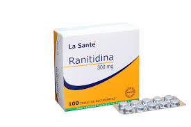
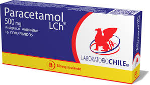
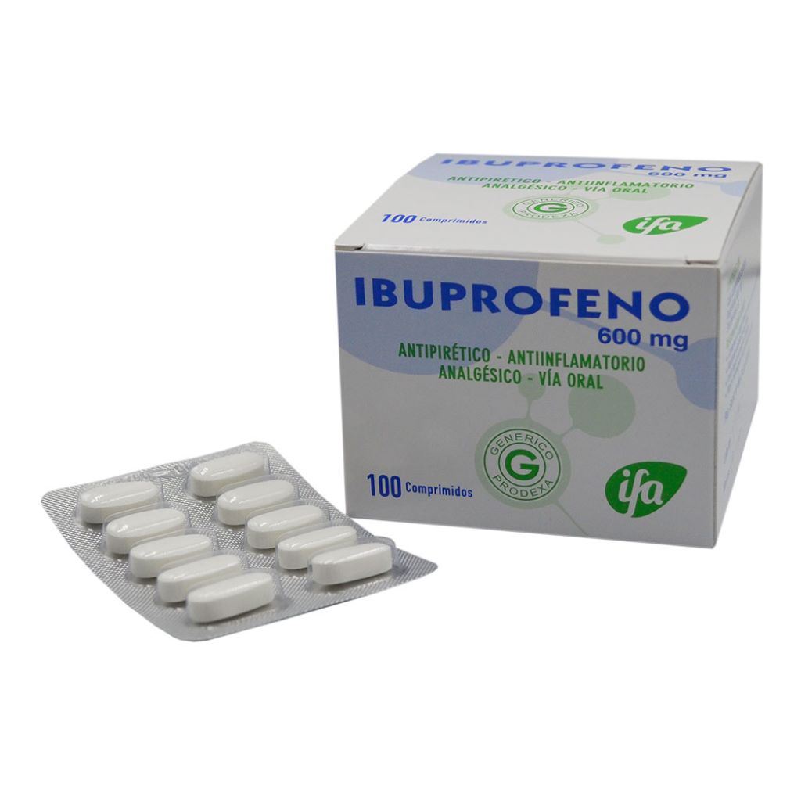
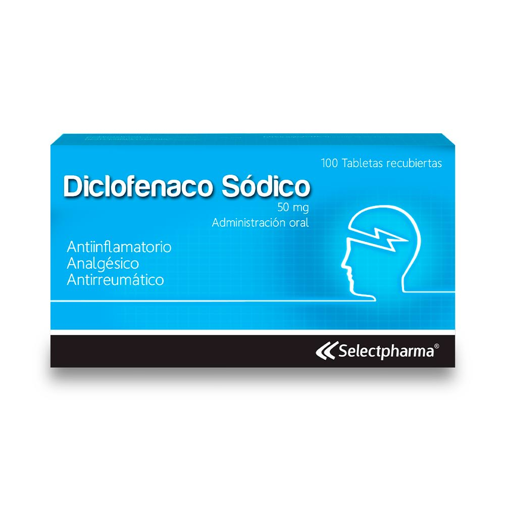
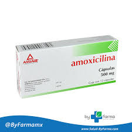
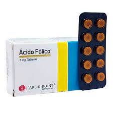

Productos
ranitidina - Q15
La ranitidina es un medicamento que se utiliza principalmente para tratar problemas relacionados con la acidez estomacal y trastornos digestivos. Funciona como un antagonista de los receptores H2 de histamina, lo que significa que reduce la cantidad de ácido que el estómago produce.
Algunas de sus principales indicaciones son:
- Úlceras gástricas o duodenales: Ayuda a reducir la acidez estomacal y favorece la cicatrización de las úlceras en el estómago o el intestino delgado.
- Reflujo gastroesofágico (ERGE): Ayuda a disminuir el ácido estomacal que sube hacia el esófago, reduciendo la irritación y el dolor.
- Dispepsia (indigestión): Ayuda a aliviar los síntomas de indigestión, como dolor o malestar en el estómago.
- Prevención de úlceras inducidas por medicamentos: En algunos casos, se utiliza para prevenir la formación de úlceras en personas que toman ciertos medicamentos, como los antiinflamatorios no esteroides

Paracetamol
El paracetamol es un analgésico y antipirético utilizado para aliviar el dolor leve a moderado y reducir la fiebre. Se presenta comúnmente en tabletas de 500 mg, jarabe, supositorios y tabletas efervescentes.
Precio
- Tabletas (500 mg): Q10 a Q30.
- Jarabe o suspensión líquida (para niños): Q15 a Q45.
- Supositorios: Q20 a Q50.

Ibuprofeno
-
Mecanismo de acción: El ibuprofeno actúa inhibiendo la ciclooxigenasa (COX), una enzima responsable de la producción de prostaglandinas, que son sustancias involucradas en la inflamación, el dolor y la fiebre. Al inhibir esta enzima, reduce la inflamación, alivia el dolor y disminuye la fiebre.
-
Usos principales:
- Dolor leve a moderado: Como dolores de cabeza, dolor muscular, dolor menstrual, dolor dental, dolor por lesiones menores.
- Fiebre: Para reducir la fiebre en casos de resfriados, gripe u otras infecciones.
- Inflamación: Utilizado en afecciones como artritis (en dosis más altas y bajo supervisión médica).
-
Efectos secundarios comunes:
- Malestar estomacal, náuseas o indigestión.
- En algunos casos, puede causar úlceras gástricas si se usa durante mucho tiempo o en dosis altas.
- Aumento de la presión arterial (uso prolongado).
- Riesgo de problemas renales (especialmente si se usa en exceso o en personas con condiciones preexistentes).
-
Precauciones:
- Evitar su uso en personas con antecedentes de úlceras gástricas, problemas renales o hepáticos.
- No se debe usar en combinación con otros AINEs para evitar efectos adversos.

Diclofenaco
-
Mecanismo de acción: El diclofenaco también inhibe la ciclooxigenasa (COX), específicamente en las formas COX-1 y COX-2, reduciendo la producción de prostaglandinas y, por lo tanto, aliviando el dolor y la inflamación. Se utiliza principalmente para tratar inflamación y dolor agudo.
-
Usos principales:
- Artritis: Especialmente en casos de artritis reumatoide y osteoartritis, aliviando el dolor y la inflamación en las articulaciones.
- Dolor musculoesquelético: Como esguinces, torceduras y lesiones deportivas.
- Dolor postquirúrgico: Para aliviar el dolor tras procedimientos quirúrgicos.
- Dolor menstrual: Para aliviar el dolor asociado con la menstruación.
-
Efectos secundarios comunes:
- Problemas gastrointestinales como dolor abdominal, náuseas o indigestión.
- Riesgo de úlceras estomacales o sangrado gastrointestinal si se usa a largo plazo.
- Dolor de cabeza, mareos, o reacciones alérgicas en la piel.
- Puede aumentar la presión arterial y el riesgo de problemas cardiovasculares (uso prolongado).
-
Precauciones:
- No se debe usar en personas con úlceras gástricas, problemas renales o hepáticos graves.
- Al igual que el ibuprofeno, no debe combinarse con otros AINEs sin supervisión médica.
- Se debe tener precaución en personas con antecedentes de enfermedades cardíacas o hipertensión.

Amoxicilina
- Descripción: La amoxicilina es un antibiótico de la clase de las penicilinas, utilizado para tratar infecciones bacterianas, como infecciones de las vías respiratorias, oído, piel, vías urinarias, entre otras.
- Mecanismo de acción: Actúa inhibiendo la síntesis de la pared celular bacteriana, lo que provoca la muerte de las bacterias.
- Usos comunes:
- Infecciones respiratorias (faringitis, amigdalitis, neumonía).
- Infecciones de oído (otitis media).
- Infecciones urinarias, piel y tejidos blandos.
- Efectos secundarios comunes:
- Náuseas, vómitos, diarrea.
- Reacciones alérgicas (erupciones cutáneas, picazón, dificultad para respirar).
- Precio:
- Tabletas de 500 mg (20 tabletas): Entre Q20 a Q40.
- Suspensión líquida (250 mg/5 ml): Aproximadamente Q25 a Q50.

Calcio
- Descripción: El calcio es un mineral esencial para el cuerpo humano, importante para la formación y mantenimiento de huesos y dientes, y para funciones musculares, nerviosas y sanguíneas.
- Usos:
- Prevención y tratamiento de la osteoporosis.
- Tratamiento de deficiencia de calcio (hipocalcemia).
- Salud dental y muscular.
- Efectos secundarios comunes:
- Estreñimiento.
- Dolor abdominal o malestar digestivo.
- En raros casos, niveles elevados de calcio en sangre (hipercalcemia).
- Precio:
- Tabletas de calcio (600 mg): Entre Q20 a Q40 por envase de 30 a 60 tabletas.
- Suplementos de calcio con vitamina D: Entre Q30 a Q60, dependiendo de la marca y la cantidad.
